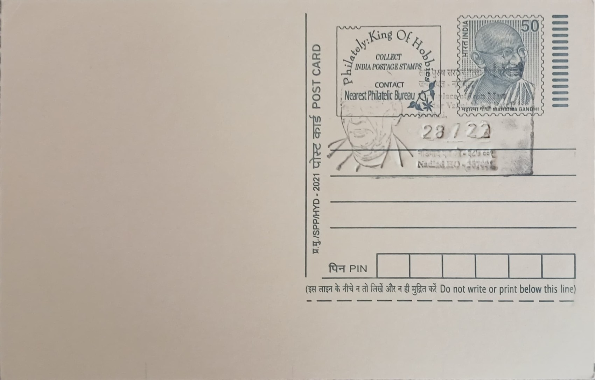

Birth Place of Sardar Vallabhbhai Patel
સરદાર વલ્લભભાઈ પટેલનું જન્મસ્થળ


Vallabhbhai Jhaverbhai Patel was born on 31 October 1875 at his maternal uncle's house in Nadiad, a town in what was then the Kheda district of the Bombay Presidency, though his actual birth date was never formally recorded and was entered later by Patel himself on his matriculation papers. His family's ancestral home, however, stood a short distance away in the village of Karamsad, where his father Jhaverbhai Patel held modest farmland and where Vallabhbhai spent his childhood and early schooling. This dual geography, birth at Nadiad and upbringing at Karamsad, is why both places figure prominently in accounts of his formative years, with Nadiad's postal association recognising the town as his literal birthplace.
Patel rose to become one of the foremost leaders of India's independence movement and the country's first Deputy Prime Minister and Home Minister, a figure popularly honoured as the 'Iron Man of India'. His enduring historical significance rests chiefly on his administration of the integration of more than 560 princely states into the Indian Union between 1947 and 1949, a political and diplomatic undertaking achieved largely through negotiation rather than force, which is widely credited with having given the newly independent nation its territorial shape. Earlier, his leadership of the Bardoli Satyagraha in 1928 had already established his reputation as an organiser capable of mobilising peasants into disciplined, non-violent resistance against colonial taxation.
The modest mud-brick house in Karamsad in which the Patel family lived, alongside the family's farm holdings, has been preserved and is maintained today as a memorial to Vallabhbhai and his elder brother Vithalbhai Patel, himself a noted nationalist politician and former President of the Central Legislative Assembly. The Sardar Patel Trust has developed the site into a joint memorial complex spread across several acres, incorporating the preserved residence, a National Resources Centre holding archival letters, photographs and audio-visual material relating to both brothers, a dedicated library, a photo gallery and landscaped gardens open to visitors. The Government of India sanctioned a one-time development grant of three crore rupees to the trust around 2009-10 for expanding and maintaining the complex.
A distinguishing feature of the Karamsad complex is its treatment of the two brothers together rather than Vallabhbhai alone, reflecting their shared political trajectory, Vithalbhai having resigned his British knighthood-adjacent legislative post in solidarity with the independence cause while Vallabhbhai pursued the Congress-led mass movements that culminated in Partition and independence in 1947. The memorial's resource centre has functioned as a point of reference for researchers and students examining the Patel family's papers and the broader Kheda-Anand region's role in Gujarat's nationalist politics, situating the site within the wider network of freedom-movement memorials across the state.
Annual maintenance funding of over seven lakh rupees has been sanctioned to the Sardar Patel Trust from 2011-12 onward to keep the Karamsad memorial grounds and archival centre operational, and the site continues to draw visitors, researchers and school groups from across Gujarat and beyond. Nadiad, the recorded birthplace a few kilometres away, lends its name to the postal pictorial cancellation associated with this subject, linking the administrative record of Patel's birth with the family home where his character as a pragmatic, determined organiser first took shape. Together the two towns, Nadiad for birth and Karamsad for upbringing and memory, frame how modern Gujarat commemorates one of its most consequential political figures.
| Date of Introduction | October 31, 2020 |
|---|---|
| Address | Senior Postmaster, |
| Nadiad HO, | |
| Kheda (dt.), Gujarat - 387001. |